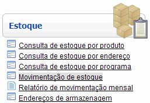
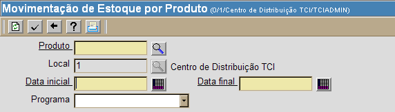
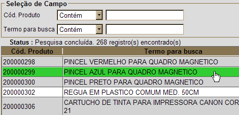

Movimentação de Estoque [ Voltar ]
Utilize
o formulário "Movimentação
de estoque"
para vizualizar o histórico de todos os eventos referentes a um produto
em um determinado período. O histórico inclui operações como
recebimentos, requisições, realocações e saídas, assim como as
quantidades, hora, data, prazo de validade, entre outras informações do
produto.
O fomulário "Movimentação de estoque" encontra-se
dentro do menu "Estoque"

Após o clique,
a seguinte tela será exibida:

Siga os seguintes passos para
o preechimento deste formulário:
1º Passo:
informe o produto para o qual deseja visualizar o histórico.
Clique no botão  [Procurar] ao lado do campo "Produto" para
visualizar a lista de todos os produtos existentes. Clique duas vezes
no produto desejado para selecioná-lo. [Procurar] ao lado do campo "Produto" para
visualizar a lista de todos os produtos existentes. Clique duas vezes
no produto desejado para selecioná-lo.

2º Passo:
especifique as datas inicial e final . Clique no botão  [Data] ao lado dos campos "Data inicial" e "Data
final" para
selecionar, com um clique, o período desejado. Todos os eventos
referentes ao produto e período especificados serão ser listados. [Data] ao lado dos campos "Data inicial" e "Data
final" para
selecionar, com um clique, o período desejado. Todos os eventos
referentes ao produto e período especificados serão ser listados.
3º
Passo: se desejar que os resultados sejam restritos a um programa
específico, selecione-o neste campo.
4°
Passo: clique no botão  para gerar o histórico de
movimentações. para gerar o histórico de
movimentações.
Ir
para o topo da página
|